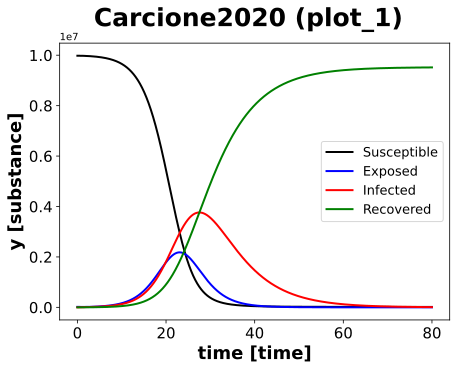

|  |
../../experiments/carcione2020.py
from pathlib import Path
from typing import Dict
from sbmlsim.experiment import ExperimentDict, SimulationExperiment
from sbmlsim.model import AbstractModel
from sbmlsim.plot import Axis, Figure
from sbmlsim.simulation import Timecourse, TimecourseSim
from sbmlsim.task import Task
class Carcione2020(SimulationExperiment):
def models(self) -> Dict[str, AbstractModel]:
Q_ = self.Q_
models = {
"model": AbstractModel(
source=Path(__file__).parent
/ ".."
/ "models"
/ "Carcione2020"
/ "Carcione2020.xml",
language_type=AbstractModel.LanguageType.SBML,
changes={},
)
}
return ExperimentDict(models)
def tasks(self) -> Dict[str, Task]:
if self.simulations():
return ExperimentDict(
{
f"task_{key}": Task(model="model", simulation=key)
for key in self.simulations()
}
)
def simulations(self) -> Dict[str, TimecourseSim]:
Q_ = self.Q_
tcsims = {}
tcsims["sim1"] = TimecourseSim(
[
Timecourse(
start=0,
end=80,
steps=8001,
changes={},
)
]
)
return tcsims
def figures(self) -> Dict[str, Figure]:
return {**self.figure_plot_1()}
def figure_plot_1(self):
unit_time = "time"
unit_y = "substance"
fig_1 = Figure(self, sid="plot_1", name=f"{self.sid} (plot_1)", num_rows=1)
plots = fig_1.create_plots(Axis("time", unit=unit_time), legend=True)
plots[0].set_yaxis("y", unit_y)
# simulation
colors = ["black", "blue", "red", "green"]
for k, skey in enumerate(["Susceptible", "Exposed", "Infected", "Recovered"]):
plots[0].add_data(
task="task_sim1",
xid="time",
yid=skey,
label=skey,
color=colors[k],
linewidth=2,
)
# plots[1].add_data(
# task="task_sim1",
# xid="time",
# yid="Deceased",
# label="Deceased",
# color="black",
# linewidth=2,
# )
return {"plot_1": fig_1}
{kind=link}